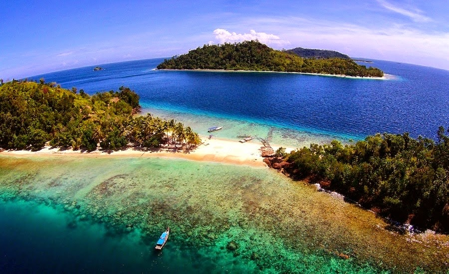
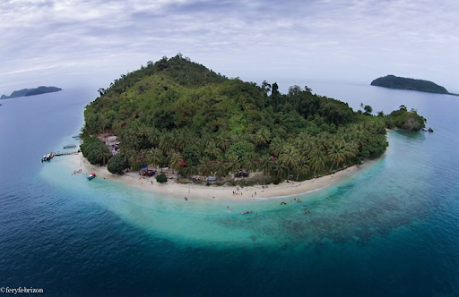
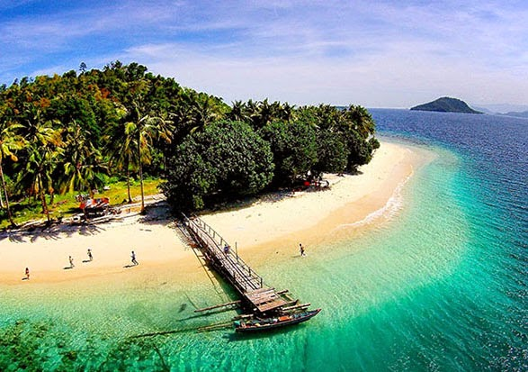
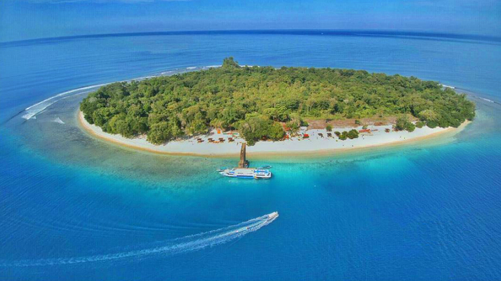

Pulau Pamutusan

Pulau Pamutusan terletak di Bungus Teluk Kabung, Padang atau sekitar satu jam perjalanan dari Kota Padang. Pulau ini dikenal dengan surga tersembunyi karena belum terjamah oleh wisatawan. Pulau Pamutusan bisa ditempuh menggunakan kapal kecil dari Pelabuhan Muara Kota Padang sekitar satu jam perjalanan laut. Luas pulau ini kurang lebih 8 hektare dengan pantai pasir putih yang indah dan banyak di kelilingi pohon kelapa di sekitar pantainya, serta tanaman bakau yang hijau alami. Pulau ini dinamakan "Pamutusan" karena terdapat semenanjung yang berubah menjadi daratan berpasir putih ketika air laut surut.
Kunjungi
Selengkapnya
Pulau Pagang

Pulau Pagang adalah surga wisata bahari yang termasuk wilayah Sumatera Barat. Pulau yang baru dibuka setelah tutupnya pulau Sikuai yang pernah menjadi favorit wisata bahari lokal dan mancanegara. Salah satu yang paling digemari di Pulau Pagang ini adalah snorkeling. Kejernihan air dan terlihatnya karang dari permukaan membuat ikan berwarna cantik bisa dijumpai di pantai pulau ini. Keanekaragaman hewan laut pun bisa menjadi pesona tersendiri. Tidak perlu membawa alat snorkeling, anda bisa menyewa peralatan pada pengelola pulau, atau bisa juga se paket dengan foto underwater.
Kunjungi
Selengkapnya
Pulau Pasumpahan

Pulau Pasumpahan adalah sebuah pulau yang berada di perairan kecamatan Bungus Teluk Kabung Kota Padang provinsi Sumatra Barat, Indonesia. Klaim akan keindahan lautnya membuat pulau ini mulai dikenal oleh wisatawan lokal dan internasional. Pulau ini diharapkan akan menjadi daerah tujuan wisata unggulan di provinsi Sumatra Barat. Pulau ini terletak di sebelah barat Pulau Setan Kecil, untuk menempuh pulau ini memakan waktu 10 menit dari Sungai Pisang dengan mesin 45 PK. Pasumpahan kini tengah dikembangkan sebagai objek wisata yang di unggulkan di daerah sumatera barat.
Kunjungi
Selengkapnya
Pulau Sirandah

Pulau Sirandah Padang berada di sebelah Selatan Kota Padang. Sirandah diambil dari bahasa minang yang artinya pulau yang rendah (randah = rendah). Nama itu disematkan karena kontur pulau sirandah yang hampir rata dan tak berbukit. Hal ini jadi keunikan sendiri dibandingkan pulau-pulau lain di kawasan Bungus dan Mandeh yang biasanya memiliki bukit kecil, misalnya Pulau Pasumpahan, Pulau Pagang, Suwarnadwipa, dan Pulau Pamutusan. Wisata unggulan Pulau Sirandah Padang tentu saja menjual keindahan bawah lautnya yang cocok bagi traveler yang gemar diving dan snorkeling.
Kunjungi
Selengkapnya